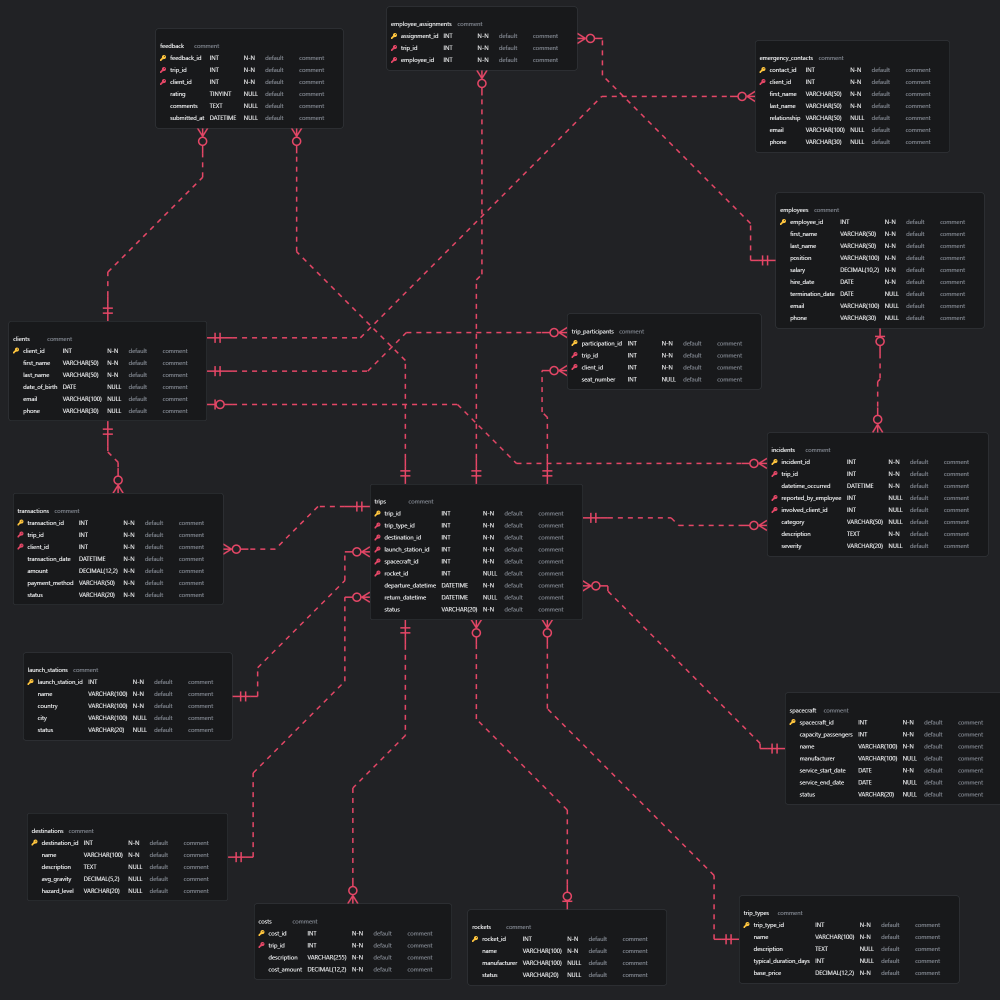

Dokumentacja projektu bazy danych
Autorzy: Jakub Ciągło, Mateusz Ćwiek, Marek Dworaczyk, Rafał Głodek
Data: 14 czerwca 2025
1. Użyte technologie
- Quarto – środowisko do generowania raportu
- Python
random– generowanie losowych wartościdatetime,dateutil.relativedelta– operacje na datachnumpy,pandas,scipy– przetwarzanie i analiza danychmysql.connector,sqlalchemy,pymsql– łączenie i operacje na bazie MariaDBfaker– sztuczne dane personalnePlotly- wizualizacje w raporcieIPython.display- tworzenie zautomatyzowanych Markdownów
- SQL (MariaDB) – definicja i tworzenie schematu bazy
2. Struktura repozytorium
| Ścieżka / plik | Typ | Zawartość |
|---|---|---|
baza_danych.sql |
SQL | Tworzy tabele, klucze główne i obce oraz indeksy |
skrypt.py |
Python | Funkcja uruchom() wypełnia bazę danymi testowymi (employees, clients, trips, …) |
raport.qmd |
Quarto | Notebook generujący wykresy i opis wyników; kompiluje się do HTML |
raport.html |
HTML | Wygenerowany raport ‑ gotowy do odczytu w przeglądarce |
schemat.png |
PNG | Schemat ERD wygenerowany z baza_danych.sql |
dokumentacja.md |
Markdown | Pełna dokumentacja projektu |
dokumentacja.html |
HTML | Zrenderowany plik dokumentacja.md |
bazy_danych.erd |
ERD | Plik erd zawierający schemat bazy, utworzony w ERD Editor |
3. Instrukcja uruchomienia
Utworzenie schematu bazy
mysql -h giniewicz.it -P 3306 -u team13 -p team13 < baza_danych.sqlWypełnienie danymi
python skrypt.pyWygenerowanie raportu
quarto render raport.qmd --to htmlOtworzyć
raport.htmlw przeglądarce.
4. Schemat bazy danych
Diagram ERD w pliku schemat.png. 
5. Zależności funkcyjne
Poniższe podsekcje (5.1 – 5.14) prezentują dla każdej tabeli:
- PK / AK – klucz główny oraz (jeśli istnieje) alternatywny
UNIQUE - FD – nietrywialne zależności funkcyjne
5.1 clients
- PK
client_id - AK
email - FD
client_id → first_name, last_name, date_of_birth, email, phoneemail → client_id, first_name, last_name, date_of_birth, phone
5.2 employees
- PK
employee_id - AK
email - FD
employee_id → first_name, last_name, position, salary, hire_date, termination_date, email, phoneemail → employee_id, first_name, last_name, position, salary, hire_date, termination_date, phone
5.3 destinations
- PK
destination_id - AK
name - FD
destination_id → name, description, avg_gravity, hazard_levelname → destination_id, description, avg_gravity, hazard_level
5.4 trip_types
- PK
trip_type_id - AK
name - FD
trip_type_id → name, description, typical_duration_days, base_pricename → trip_type_id, description, typical_duration_days, base_price
5.5 launch_stations
- PK
launch_station_id - AK
name - FD
launch_station_id → name, country, city, statusname → launch_station_id, country, city, status
5.6 rockets
- PK
rocket_id - AK
name - FD
rocket_id → name, manufacturer, statusname → rocket_id, manufacturer, status
5.7 spacecraft
- PK
spacecraft_id - AK
name - FD
spacecraft_id → capacity_passengers, name, manufacturer, service_start_date, service_end_date, statusname → spacecraft_id, capacity_passengers, manufacturer, service_start_date, service_end_date, status
5.8 trips
- PK
trip_id - FD
trip_id → trip_type_id, destination_id, launch_station_id, spacecraft_id, rocket_id, departure_datetime, return_datetime, status
5.9 trip_participants
- PK
participation_id - AK
(trip_id, client_id) - FD
participation_id → trip_id, client_id, seat_number(trip_id, client_id) → participation_id, seat_number
5.10 employee_assignments
- PK
assignment_id - AK
(trip_id, employee_id) - FD
assignment_id → trip_id, employee_id(trip_id, employee_id) → assignment_id
5.11 transactions
- PK
transaction_id - FD
transaction_id → trip_id, client_id, transaction_date, amount, payment_method, status
5.12 costs
- PK
cost_id - FD
cost_id → trip_id, description, cost_amount
5.13 incidents
- PK
incident_id - FD
incident_id → trip_id, datetime_occurred, reported_by_employee, involved_client_id, category, description, severity
5.14 feedback
- PK
feedback_id - FD
feedback_id → trip_id, client_id, rating, comments, submitted_at
6. Uzasadnienie formy EKNF
Elementary Key Normal Form (EKNF) wymaga, aby dla każdej nietrywialnej zależności funkcyjnej X → Y zachodzącej w relacji, zbiór atrybutów X był kluczem lub żeby każda składowa Y należała do klucza.
Jak spełniamy ten warunek
- Jednoznaczne identyfikatory – w większości tabel stosujemy proste klucze główne
…_id(INT AUTO_INCREMENT). - Atrybuty unikalne – tam, gdzie naturalny identyfikator ma sens (
email,name, para(trip_id, employee_id)), dodaliśmy ograniczeniaUNIQUE; powstają klucze kandydujące. - Tabele łącznikowe – w
employee_assignmentsitrip_participantskluczem kandydującym jest zarówno syntetyczneassignment_id/participation_id, jak i para obcych kluczy. - Zależności funkcyjne – jedynymi nietrywialnymi zależnościami są te z rozdziału 5; każda ma po lewej stronie klucz kandydujący (spełnia to pierwszy warunek definicji).
- Brak zależności między kolumnami niekluczowymi – np.
salarynie determinujeposition, afirst_namenie determinujelast_name.
W rezultacie każda tabela spełnia kryteria EKNF.
7. Co było najtrudniejsze
- Zadbanie o pełną EKNF – każda tabela wymagała przemyślenia kluczy i usunięcia nadmiarowych kolumn czy zależności.
- Spójne generowanie dat – przesunięcie całego okresu o 100 lat plus 5 lat historii wymagało pilnowania, aby wszystkie daty zachowały realną kolejność.
- Harmonogramowanie zasobów (statki, rakiety, załoga, klienci) bez kolizji – implementacja detekcji konfliktów terminów.
8. Bibliografia
- Elmasri & Navathe: Fundamentals of Database Systems, 7 ed.
- MySQL 8.3 Reference Manual – rozdz. 13 („Constraints & Indexes”).
- Date, C.J.: An Introduction to Database Systems – rozdz. o normalnych formach.
- Youtube: “Learn Database Normalization - 1NF, 2NF, 3NF, BCNF, 4NF, 5NF” – https://www.youtube.com/watch?v=GFQaEYEc8_8&t=892s&ab_channel=Decomplexify